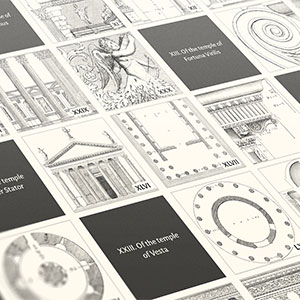

Featured


Latest from the blog
-  Making of The Four Books of Architecture
- January 8, 2023
Architecture has grabbed my attention repeatedly since I was young—from studying it in high school and making buildings in video games to designing websites for firms winning architectural awards. It’s fitting that my interest is piqued once again for a digital edition of one of the oldest and most well known architectural publications: Palladio’s treatise, The Four Books of Architecture.
 Making of Mathematical Instruments
Making of Mathematical Instruments- September 18, 2022
I work best with existing material—whether that be images, ideas, spreadsheets, documentation, books, etc. That existing material defines the boundaries I need to create something more. When I stumble across a nice chunk of material that has those boundaries (like an old unique book), excitement really sets in. This is what I felt when I found Nicolas Bion’s treatise on mathematical instruments from 1709.
 Making of 17th Century Watercolors
Making of 17th Century Watercolors- June 18, 2022
Way back in 2014, a Dutch manuscript from about mixing watercolors from 1692 made a splash in the blogosphere, because while it was centuries old, few had given it much attention and it was such a beautifully preserved thorough account of how watercolors were mixed back then. Ever since then, I thought it had potential as a fun project but avoided creating one due to language barriers and other reasons that turned out to be unfounded.
 Making of Iconographic Encylopædia
Making of Iconographic Encylopædia- February 6, 2022
The digital edition of Iconographic Encyclopædia from 1851 was by far, the largest and longest project I’ve undertaken. Comprising 500 plates, more than 13,000 illustrations, 1.6 million words, and spanning 13 months, it was a wonderful exercise in creativity and patience.
 Making of A Brief Visual Exploration of A Dictionary of Typography
Making of A Brief Visual Exploration of A Dictionary of Typography- December 16, 2020
Not many people read a dictionary cover to cover, let alone analyze every word, but I did and found it fascinating. During research phases for my past restoration projects, I often came across a surprising number of antique dictionaries and always overlooked them. For this project, I actively sought out an interesting one to explore and ended up finding two to create A Brief Visual Exploration of A Dictionary of Typography.
 Announcing jigsaw puzzles
Announcing jigsaw puzzles- October 29, 2020
I’m excited to announce that 1,000-piece jigsaw puzzles are now available for three of my projects with more to come. Puzzles are available for British & Exotic Mineralogy, Illustrations of the Natural Orders of Plants, and Byrne’s Euclid. The idea to offer puzzles was sparked by some recent comments that the mineralogy poster could be a good fit but they started me down an intriguing path of researching what it would take to get these puzzles manufactured.
 Making of British & Exotic Mineralogy
Making of British & Exotic Mineralogy- July 25, 2020
Have you ever had an idea that sticks with you? One popped into my head when I stumbled across James Sowerby’s massive collection of mineral illustrations from the nineteenth century. I naively wondered how they would look arranged by color in a big collage and spent the next three and a half months making it happen with British & Exotic Mineralogy…and learning new levels of patience along the way.